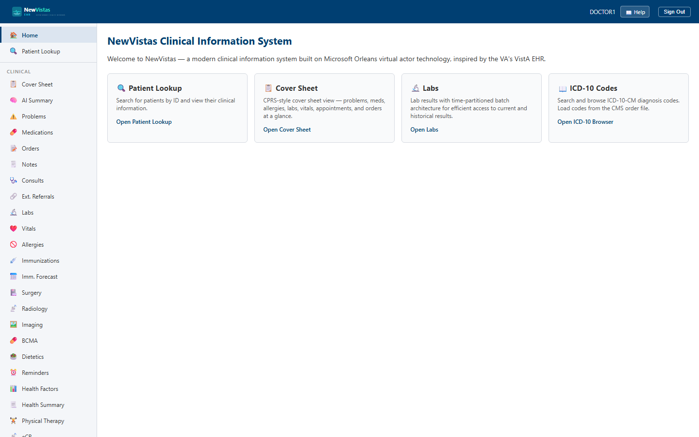

Manual › Physician › Overview
Physician Manual
Everything a provider does in NewVistas — reviewing the chart, placing orders, documenting, and prescribing — with step-by-step walkthroughs and screenshots. The pages here mirror the Clinical, Nursing, Laboratory, and Radiology sections you see in your sidebar after signing in.

In this manual
Getting StartedSign in, navigate, and pull up a patient.
Cover SheetThe one-screen patient summary and quick actions.
Problem ListReview and maintain the active problem list.
Prescribing & Safety Gatee-Prescribing and the controlled-substance confirmation.
Order EntryPlace, sign, and manage CPOE orders and order sets.
Progress NotesWrite, sign, and cosign TIU progress notes.
ConsultsRequest and track consults between services.
LabsReview results and trends, and order new tests.
AllergiesDocument allergies that drive safety checks.
ImmunizationsRecord and review the immunization history.
Oncology / Tumor RegistryRegister cancers, stage them, and review precision-medicine matches.
Radiation TherapyPlan and track external-beam and brachytherapy courses.
Cancer RegistryGenerate and submit NAACCR cancer abstracts.
Home-Based CareRun HBPC and Medicare skilled home health — caseload, episodes, visits.
Before you start
You'll need a provider account (e.g.
DOCTOR1) and the system
running (SiloHost, WebServer, and the Blazor app). See
Getting Started.